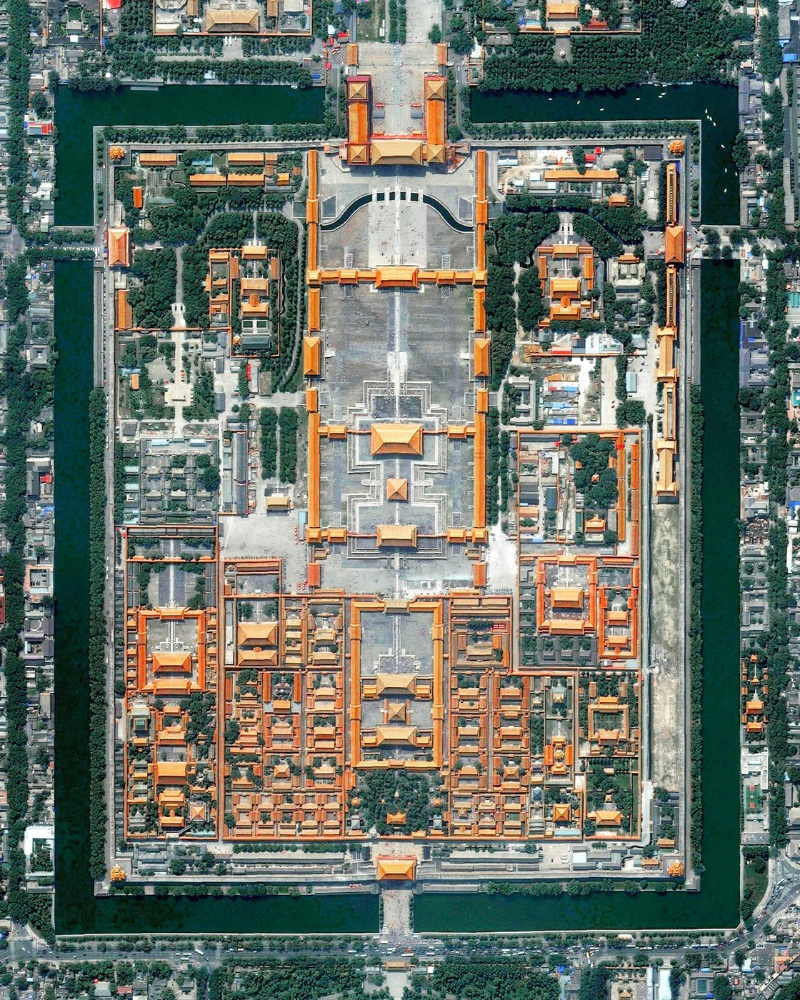
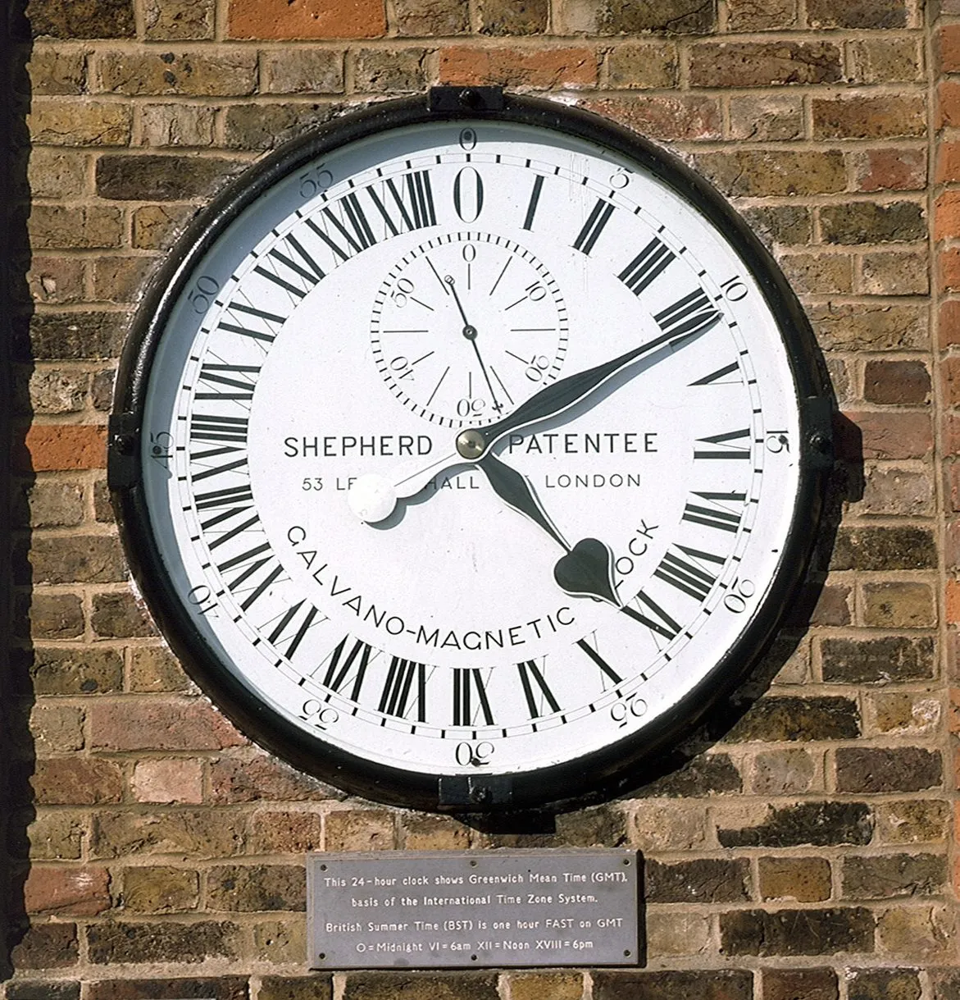
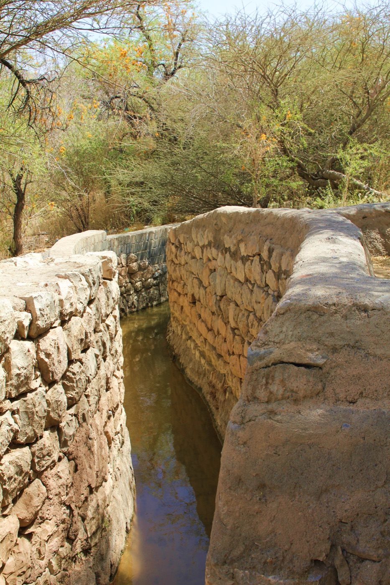

热点 01 · 国内 / 土地制度
2900多万农户续签土地承包：这30年延长的到底是哪一种权利？
不是把农村土地变成私产，而是在集体所有之下，把农户的预期再稳定30年。
上海青浦农户办理第二轮土地承包延包签约。图：上海市青浦区农业农村委员会
先说发生了什么
农业农村部7月24日公布，截至目前，已有2900多万农户顺利签订第二轮土地承包到期后的延包合同。全国正在推进整省试点，以第二轮合同到期为起点，再延长30年。
这不是一次简单的表格续期。试点需要核对农户家庭成员、承包地变化、确权登记、分户合户、进城落户、婚嫁以及整户消亡等情况，再处理历史遗留问题和纠纷。
知识锚点
“所有权、承包权、经营权”不是一回事
农村承包地实行“三权分置”：土地所有权归农民集体；集体成员家庭依法取得承包权；农户还可以保留承包权，把一定期限内的经营权流转给合作社、家庭农场或其他经营者。
因此，“再延长30年”主要稳定的是农户与集体之间的承包关系，不等于获得一块可以自由买卖、任意改变用途的私有土地。承包权稳定与经营权流动，可以同时存在。
值得拿出来聊的角度
它真正处理的是“稳定”与“重新分配”的冲突
土地若隔几年就重分，农户和经营者很难放心修水利、改土壤或签长期流转合同；谁也不愿为一块随时可能换人的地做长期投入。延包把预期拉长，首先解决的是投资期限与权利期限不匹配的问题。
但30年里人口一定会变化：有人进城，有人嫁入，有新生儿，也有家庭消亡。如果每次人口变化都重新分地，稳定性会消失；如果完全不调整，又会出现同一集体成员之间“有人有地、有人没地”的公平问题。
现行思路实际上明确偏向“大稳定、小调整”：绝大多数农户原有承包地保持稳定，特殊情况再通过集体民主协商和法定程序处理。它没有让稳定与公平同时达到满分，而是先保住长期预期，再用集体收益分配、就业和有限调整弥补人口变化。
为什么不是干脆按人口再分一次？
主张少调地的人看重确定性：承包关系越稳定，土地流转、规模经营和长期投入越容易。希望适度调整的人则担心，30年前的人口结构会被继续固化，让后来取得集体成员身份的人缺少土地权益。
这项制度的取舍很清楚：农村土地同时承担生产资料和社会保障功能，但频繁均分会让它难以成为可长期经营的生产资料。延包选择先降低制度的不确定性；它是否公平，最终要看特殊人群的成员权、集体收益和有限调地程序能否真正落地。
“这30年延长的不是土地私有，而是把农户的承包预期锁得更长，同时让经营权继续流动。”
查看事实来源
新华社：2900多万农户已签订延包合同
农业农村部等：第二轮土地承包延包试点工作规程
中央有关文件：延包30年与“三权分置”
图片来源：上海青浦延包网签现场
热点 02 · 国际 / 财经
美国又给60个经济体加关税：真正的变化不只在税率
10%和12.5%当然重要，但更值得看的是：旧工具被法院否定后，关税政策换了一条法律通道继续走。
美国宣布对60个贸易伙伴加征10%或12.5%的关税。图：AP
先说发生了什么
美国贸易代表办公室7月23日宣布，以相关经济体没有充分禁止强迫劳动产品进口为由，对包括中国、欧盟在内的60个贸易伙伴加征10%或12.5%的关税，覆盖美国绝大多数进口来源，并设置部分原材料、供应不足商品和可能造成全局扰动的豁免。
这项措施接在一项临时全球进口附加税到期之后。澳大利亚、新西兰、巴西、智利等贸易伙伴公开质疑其理由或合法性。
知识锚点
“301条款”不是一个税率，而是一套授权路径
这次美国使用的是《1974年贸易法》第301条。它允许美国政府调查外国的政策或做法，并在认定其“不合理”或损害美国商业利益后采取贸易措施。它和此前被最高法院否定的紧急经济权力路径不是一回事。
所以政策新闻里最容易漏掉的问题不是“加了几个点”，而是：政府用哪条法律，把同一个政策目标重新包装并延续下来？
值得拿出来聊的角度
这轮关税同时在争夺三种解释权
第一是道德解释权。把关税与强迫劳动挂钩，会让贸易措施披上一层人权执法的外衣。问题在于，若判定标准和豁免清单受谈判影响，它就不再只是道德规则，也是一种议价工具。
第二是法律解释权。法院限制了一种总统征税路径，不等于关税政策自动结束；行政部门会寻找另一条授权。市场面对的因此不是一次性的税率，而是政策工具不断迁移带来的不确定性。
第三是成本解释权。新闻常说“对某国征税”，但关税首先由美国进口商在入关时缴纳。之后成本由谁承担，要看进口商、海外供应商和消费者各自的议价能力。它可能变成涨价，也可能被利润吸收，或者逼供应链换地方——通常不是某一方全扛。
对做金融的人来说，最值得观察的不是口号，而是企业下一季财报里的三个地方：库存是否提前堆高、毛利率是否被压缩、供应商是否重新定价。
争议并不只在“要不要反对关税”
支持者认为，只有给违规供应链制造真实成本，劳动标准才不会停在声明里；反对者则认为，一刀切地惩罚60个经济体，会把复杂的供应链审查变成普遍保护主义，并最终让进口企业和消费者承担成本。
“这次值得看的不是关税又来了，而是它换了一条法律通道继续来了。”
查看事实来源
美国贸易代表办公室：正式行动公告
美国贸易代表办公室：税率与豁免说明
AP：贸易伙伴的回应
新华社：对数十个经济体加征关税
热点 03 · 文化 / 社会
故宫下周一免费开放：免费以后，稀缺并没有消失
票价归零，只是把分配门槛从“钱”换成了“时间、信息和手速”。

俯瞰故宫，可以直观看到中轴秩序。图：Overview / DigitalGlobe
先说发生了什么
为庆祝北京中轴线申遗成功两周年，故宫博物院宣布7月27日星期一免费开放一天，开放时间为8:30至17:00，16:00停止入馆。参观必须在微信小程序实名预约，现场不售票，名额约满即止。
这条消息之所以迅速传播，不只是因为“省了60元”，更因为故宫本身就是暑期最稀缺的公共文化资源之一。
知识锚点
北京中轴线不是“一条老街”
它是一组延续约700年的城市空间秩序，从钟鼓楼向南贯穿故宫、天安门、正阳门等重要节点。联合国教科文组织强调的，不只是建筑够老，而是这套布局把古代都城关于礼制、方向和中心的观念，做成了可以行走的城市结构。
故宫免费日选在申遗纪念日前后，实际是在用一次高关注度开放，把“中轴线”从遗产名录里的名词变成公众可以感知的空间。
值得拿出来聊的角度
公共文化的难题，常常不是“收费还是免费”
当参观容量固定、需求远大于供给，免费并不会消灭稀缺，只会改变稀缺的分配方式。原来用票价筛选，免费后用预约时间、数字工具熟练度和信息获取速度筛选。
这也解释了为什么“免费开放”既是公共性的表达，又可能制造新的不公平：有空盯着放票时间、熟悉小程序的人，更容易拿到名额；真正临时起意或不熟悉智能手机的人，反而被挡在外面。
因此更深一层的问题不是“门票该不该免费”，而是稀缺公共资源如何分配：先到先得、抽签、分时段、为特定群体预留，背后分别奖励的是手速、运气、计划能力或政策优先级。一个预约页面，其实藏着一套小型的分配制度。
免费日值不值得？
支持者看重象征意义：世界遗产纪念日让更多人共享文化空间；质疑者担心，一天免费带来的拥挤和抢票焦虑，可能大于实际受益。两边争的不是故宫值不值得看，而是“公共”应该如何落到有限名额上。
“门票免费不等于稀缺消失，它只是把价格门槛换成了预约门槛。”
查看事实来源
故宫博物院：7月27日开放公告
新华社：免费开放及预约信息
联合国教科文组织：北京中轴线
涉猎 01 · 科技 / 制度史
以前每座城都有自己的时间，铁路为什么逼大家把钟对齐？

1852年安装的谢泼德门钟，把格林尼治时间直接展示给公众。图：Royal Museums Greenwich
故事背景
机械钟普及以后，19世纪上半叶的英国仍没有全国统一时间。每座城按太阳升到当地最高点的时刻定“正午”；经度不同，钟点就不同。伦敦到利物浦向西旅行，抵达后需要把表拨慢大约12分钟。
步行和马车时代，这点差异不太碍事。铁路把城市快速接成网络后，同一张时刻表、同一段单线轨道和沿途各走各的钟无法共存。到1840年代，多数英国铁路公司开始采用格林尼治时间；1852年，天文台又通过电报线向车站发送统一时间信号。
有意思的地方
标准时间不是被“发现”的，而是被网络逼出来的
太阳并没有突然改变运行方式。改变的是协调成本：城市单独生活时，本地时间很合理；列车、信号员、货运和乘客必须跨城配合后，几分钟的地方差异会变成误车、排班混乱，甚至安全风险。
这是一种典型的网络效应：统一时间的价值，不在于某一只钟更准，而在于使用同一标准的人越多，所有人的协作越便宜。电报又让“中心的一只钟”几乎瞬间复制到远方，统一才真正具备技术条件。
1884年，25个国家的代表开会建议把格林尼治经线定为本初子午线。格林尼治并非天然的“世界中心”；它胜出的一项现实基础，是当时近三分之二的世界船舶已经使用以格林尼治为基准的海图。标准看似中立，背后常有先发使用量、技术网络和国家力量。
今天的时区为什么没有整整齐齐按经度切？
如果只看太阳，每15度经度大致相差一小时，世界可以被切成规整条带。但现实中的时区会绕着国界、行政区和商业联系弯曲，有些地方还使用半小时或45分钟偏移。
原因是标准时间首先服务于共同生活，而不只是忠实反映太阳位置。一个国家可能宁愿让东西部“太阳钟”相差很大，也要让行政、交通和市场使用同一时间。时区地图因此既是天文学地图，也是一张政治与经济协作地图。
“铁路没有发明标准时间，它只是让每座城各过各的时间，突然变得太昂贵了。”
查看延伸来源
Royal Museums Greenwich：铁路、格林尼治时间与电报授时
英国国家铁路博物馆：铁路时钟与统一时间
1884年国际子午线会议与格林尼治基准
涉猎 02 · 地理 / 制度
在阿曼，水不是按桶分，而是按时间分

阿曼仍在使用的法拉吉灌溉系统。图：Andries Oudshoorn / Wikimedia Commons
故事背景
阿曼的“法拉吉”（aflaj）是一套靠重力把地下水、泉水或地表水引到村庄和农田的水渠系统。联合国教科文组织记录，阿曼仍有约3000套法拉吉在运行，其中一些地区的灌溉传统可以追溯到公元前2500年左右。
它不只是一项水利工程，还包含分水口、农田、聚落、瞭望塔和一套持续维护水渠的社区制度。
有意思的地方
稀缺资源最聪明的分法，有时是分“使用时段”
流水很难像土地那样切成固定小块。当地社区便把水权变成时间权：某户在某个时段打开闸门，把水引向自己的枣椰园；时间到了，再交给下一户。传统上，人们甚至用日晷观察时段。
这个制度的独特之处，是把个人收益和公共维护绑在一起。任何一户都需要上游水渠保持畅通，因此大家有理由共同维修；部分水权和土地还会专门留下，为系统筹集维护资金。
它提醒我们，所谓“产权清楚”不一定非得把东西切开占有。对水流、道路、频谱这类连续而共享的资源，把使用权按时间和规则安排，可能比追求永久占有更有效。
“阿曼人分的不是一桶水，而是水经过你家门口的那段时间。”
查看延伸来源
联合国教科文组织：阿曼法拉吉灌溉系统
图片来源与授权信息
涉猎 03 · 植物 / 商业
香草为什么贵？一朵花只给人几个小时
香草其实是一种兰花。图：美国国家公园管理局 / Wikimedia Commons
故事背景
天然香草来自香草兰的果荚。香草兰原产中美洲，移种到马达加斯加、留尼汪等地后，当地缺少适合的天然传粉者，植株会开花，却很难结果。
1841年，留尼汪岛一名年仅12岁的被奴役少年埃德蒙·阿尔比乌斯，找到了一种用细小工具拨开花内隔膜、完成手工授粉的方法。这套方法至今仍在使用。
有意思的地方
全球产业的瓶颈，可能藏在一朵花的结构里
香草兰的花期很短，一朵花通常只开放大约8小时。工人必须在窗口期内逐朵操作；授粉成功后，果荚还要经历数月生长和复杂的熟化，香味才会出现。
这意味着天然香草很难像普通粮食那样靠扩大机械化迅速增产。它的价格不仅来自土地和气候，还来自一种难以压缩的手工时间。
更值得记住的是，改变世界香草供应链的人并没有因此获得相称回报。一个常见的商业叙事会说“技术突破带来产业繁荣”，但这段故事还应该多问一句：繁荣由谁创造，价值最后又被谁拿走？
“天然香草的贵，某种程度上是把一朵只开几小时的兰花，逐朵说服它结果。”
查看延伸来源
英国皇家植物园邱园：香草兰与手工授粉
史密森尼花园：埃德蒙·阿尔比乌斯的授粉方法
图片来源与授权信息
“人是悬挂在自己编织的意义之网上的动物。”
克利福德·格尔茨，《文化的解释》。他是在说明文化并不是人身外的一件装饰，而是我们亲手创造、随后又生活其中的意义系统。你记得的句子方向没错，不过它不是弗洛姆的原话；格尔茨写这句话时还特别注明是借用了马克斯·韦伯的说法。
出处线索
“成熟的爱，是在保持自身完整和独立的条件下与人结合。”
埃里希·弗洛姆，《爱的艺术》，1956年。弗洛姆把“结合”与“吞没”分开：亲密并不要求一个人交出自己的判断、边界和个性。两个人能够靠近，同时仍各自完整，才是他所说的成熟；所以爱不是取消差异，而是让差异不再等于隔绝。（本刊译）
作品出处
“爱，是极其艰难地认识到：自己以外的事物也是真实的。”
艾丽丝·默多克，《崇高与善》，1959年。她针对的是自我中心制造的幻象：我们很容易把别人看成自己愿望里的角色，而不是一个有独立经验的人。爱之所以“艰难”，不在于感情够不够浓烈，而在于能否让对方的现实修正自己的想象。（本刊译）
出处与语境
“从来没有一份文明的记录，同时不是一份野蛮的记录。”
瓦尔特·本雅明，《历史哲学论纲》，1940年。他不是说文明成果都应被否定，而是提醒人别只看胜利者留下的宫殿、典籍和制度。许多被称作“成就”的东西，也包含征服、强迫劳动和被抹去者的代价；读历史若只见光彩，就只读到了保存下来的一面。（本刊译）
出处与语境
“我们拥有了经历，却错过了它的意义。”
T. S. 艾略特，《四个四重奏·干燥的塞尔维吉斯》，1941年。经历过一件事，并不等于已经理解它；意义常常要在回望、讲述和重新排列之后才出现。艾略特紧接着还说，接近意义会让经历以另一种形式回来——理解不是给往事贴标签，而是重新获得它。（本刊译）
作品出处